地政学
アンカラはトルコ共和国の政治中枢で、国会、官庁、軍、外交機関が集まります。黒海、地中海、中東、コーカサスへ向かう政策判断が内陸高原の首都で作られ、国家の安全保障が日常の街路にもにじみます。緊張の軸です。
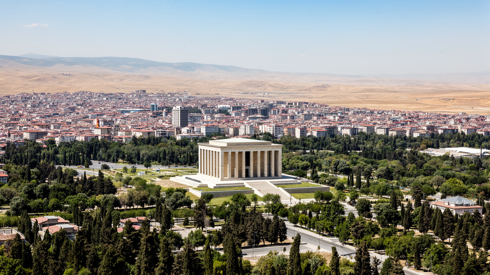
🇹🇷 トルコ / 西アジア / World City Atlas
アナトリア高原に置かれた共和国の首都。官庁、議会、防衛産業、大学、鉄道、城塞、市場、郊外住宅が、イスタンブールとは違う内陸国家の重心を作ります。
都市の骨格
アンカラは海港都市ではなく、アナトリアの内陸交通、国会、省庁、軍、大学、研究機関をまとめる首都です。旧城塞の丘と共和国期の大通りが、国家形成の記憶を都市の軸にしています。
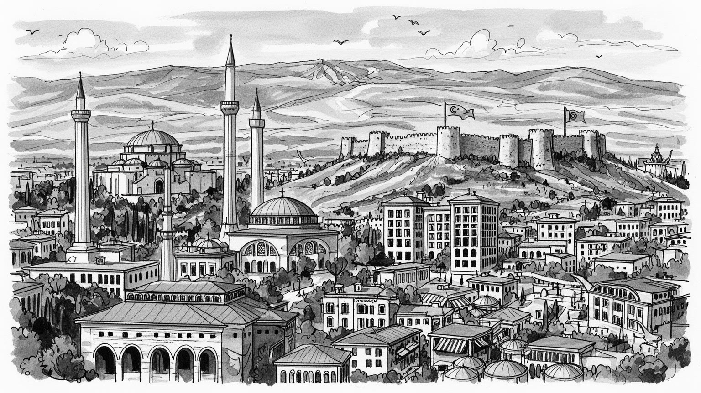
アンカラはトルコ共和国の政治中枢で、国会、官庁、軍、外交機関が集まります。黒海、地中海、中東、コーカサスへ向かう政策判断が内陸高原の首都で作られ、国家の安全保障が日常の街路にもにじみます。緊張の軸です。
雇用は行政、防衛産業、航空宇宙、大学、病院、建設、商業、製造に広がります。安定した公務と専門職の厚みがある一方、郊外の工場、清掃、配送、飲食、警備、介護の労働も都市の運営を支えています。街の基盤です。
アタテュルクの記憶、世俗共和国の儀礼、モスクの礼拝、アナトリアの民俗、大学文化が同じ都市にあります。首都の公式性と地域の信仰生活が並び、国民統合と多様な日常が重なります。常に交渉です。今も続きます。
住民は官庁街、大学、地下鉄、バス、住宅団地、市場、公園を行き来します。観光はアタテュルク廟、城塞、博物館、古い市場が軸ですが、冬の寒さ、交通、家賃、若者雇用も街の読み方になります。生活の都市です。
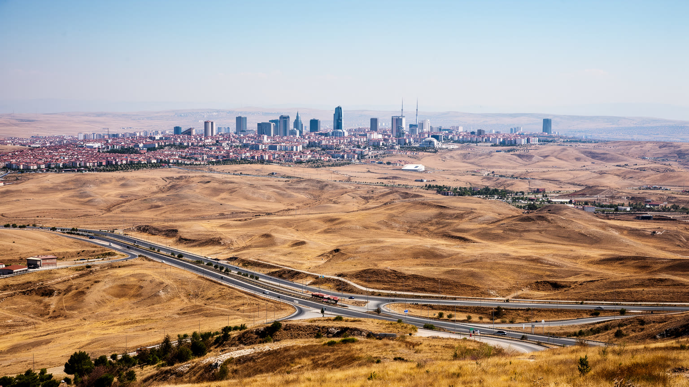
アンカラを理解する入口は、海に開いた大都市ではなく、アナトリア高原の内陸に置かれた首都であることです。都市は標高のある乾いた盆地に広がり、夏の強い日差し、冬の雪と寒さ、丘陵地の住宅地、広い幹線道路が生活感を作ります。古い城塞の丘は交易路と防衛の記憶を残し、共和国期の大通りと官庁街は新国家が意識的に作った中心を示します。鉄道駅、バスターミナル、環状道路、空港はイスタンブール、コンヤ、エスキシェヒル、黒海方面を結び、内陸交通の結節点としての役割を強めてきました。海港を持たないため、都市の国際性は港湾ではなく国家機関、外交、大学、航空、防衛、道路網を通じて現れます。乾いた高原の地形は、水資源、緑地、暖房、通勤距離にも関わります。アンカラの広さは行政区域の面積だけでなく、中心の官庁街から郊外の住宅団地や工業地へ伸びる移動時間として経験されます。内陸性の気候と政治首都の計画性が重なることで、アンカラは地中海的な都市とも、ボスポラスの商都とも違う硬質な表情を持ちます。街を読むには、城塞から見える旧市街、共和国期の軸線、郊外へ拡張する団地を同時に見る必要があります。水の少なさや冷え込みは公園づくり、街路樹、住宅断熱、公共交通の設計にも影響し、自然条件が政治都市の毎日を静かに形づくっています。ここが起点です。
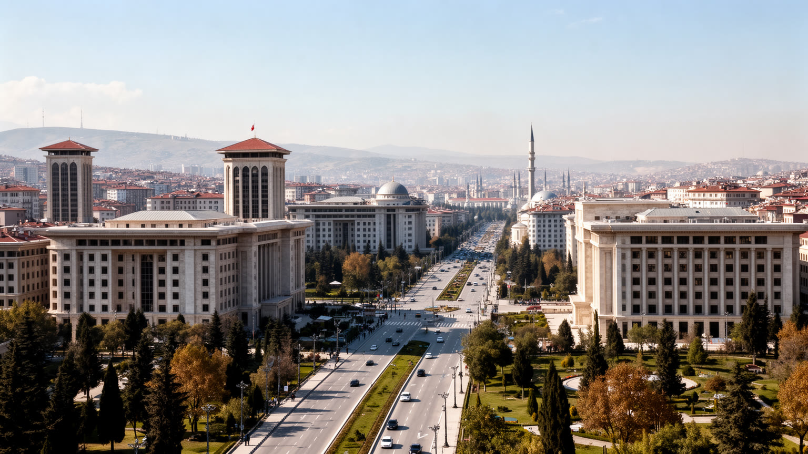
アンカラはトルコ共和国の制度を日々運転する都市です。国会、大統領府、省庁、最高裁、政党本部、外国大使館、軍関係機関が集まり、外交、安全保障、経済政策、教育、宗教行政、災害対応の判断がここで形になります。首都機能は観光名所のように一か所へ閉じているのではなく、広い大通り、官庁街、警備、式典、抗議、記者会見、通勤の混雑として街に現れます。共和国初期にイスタンブールではなくアンカラが首都に選ばれたことは、帝国の海峡都市から離れ、アナトリアの中心で近代国家を作るという政治的な意思を示しました。そのためアンカラの都市空間には、世俗主義、国民統合、軍と官僚制、教育制度、地方への統治の回路が刻まれています。同時に、現代のトルコ政治は大統領制、地方自治、宗教と世俗、クルド問題、難民、安全保障、物価上昇をめぐる緊張を抱えます。アンカラを読むことは、単に首都らしい建物を眺めることではありません。政策が住宅費、学校、徴兵、交通、公共雇用、メディア、外交姿勢として住民の生活へ届く過程を見ることです。首都の静かな秩序の背後には、国家をどう定義するかをめぐる継続的な議論があります。地方から来る陳情、国際会議、災害時の指揮、選挙期の集会が重なるため、街路は行政手続きと政治的表現の双方を受け止める舞台になります。そこが首都性です。
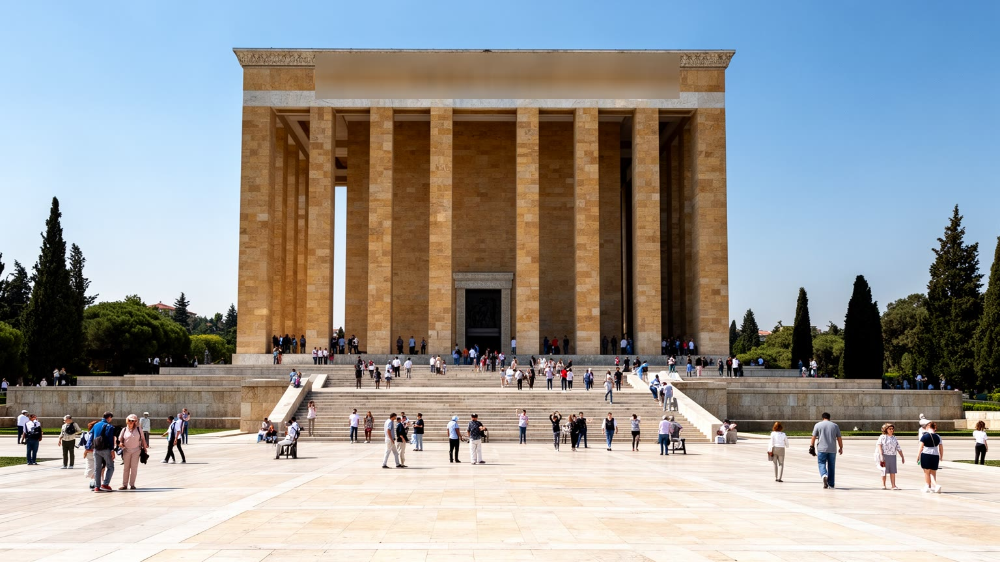
アンカラの象徴として最も強い場所の一つがアタテュルク廟、アヌトゥカビルです。広い参道、石の広場、儀仗、博物館、眺望は、個人の墓を越えて共和国の起源を記憶する国家的な空間になっています。ここを訪れる人は、独立戦争、文字改革、世俗主義、教育改革、近代化の物語を、都市の中心で身体的に経験します。学校行事、軍や官庁の式典、国民的な追悼日、観光客の訪問が重なり、記憶は静かな展示ではなく現在の政治文化として働きます。一方で、アタテュルクの記憶は単純な合意だけではありません。世俗共和国の象徴として強く支持される一方、宗教、民族、地方、政治的立場によって受け止め方は異なります。アンカラでは、公式の記憶が大通り、銅像、学校名、博物館、記念式典として広く配置され、都市そのものが共和国史の教材になります。重要なのは、その記憶を硬い崇敬に閉じず、誰が国家の物語に含まれ、誰が周縁に置かれたのかも考えることです。アヌトゥカビルの整然とした空間は、国家の自画像を示すと同時に、現代の市民が共和国の理念をどのように更新するかを問いかけます。記念施設を読むことは、過去への敬意だけでなく、現在の公共性を測る作業でもあります。丘の上から市街を眺めると、記憶は都市の外に置かれた飾りではなく、通学、兵役、投票、国民教育と結びつく現在の制度だと分かります。
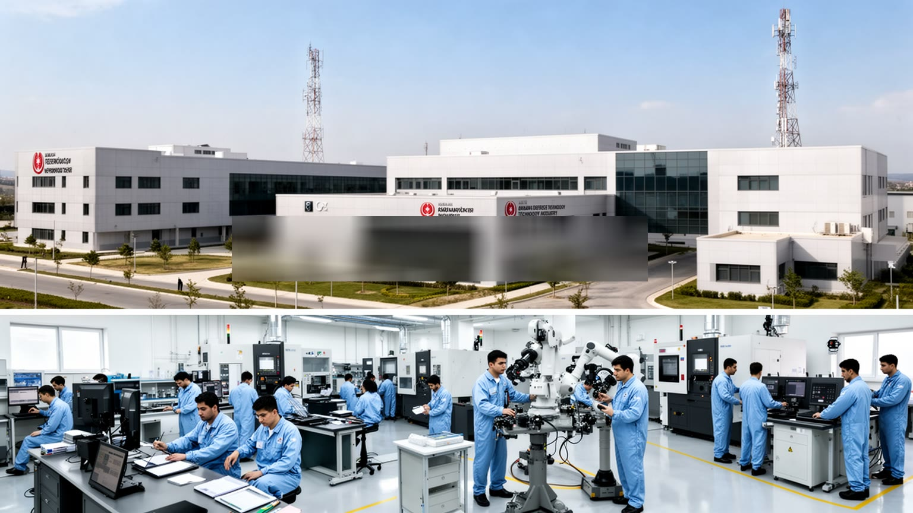
アンカラの経済を特徴づけるのは、行政だけでなく防衛産業、航空宇宙、電子機器、ソフトウェア、研究開発の厚みです。軍と国家調達に近い企業、大学、技術パーク、工業団地が結びつき、レーダー、通信、航空機部品、無人機、装甲車両、医療技術、情報システムなどの分野で専門職を生みます。こうした産業は高い技能と安定した雇用をもたらす一方、安全保障政策や輸出規制、地域紛争、国家予算に強く左右されます。研究者、技術者、熟練工、購買、品質管理、清掃、食堂、警備、輸送まで、多様な労働が一つの産業を支えます。オフィスや工場の内部は見えにくいですが、都市の所得、住宅地、大学選択、若者の進路に大きな影響を持っています。防衛産業の成長は、トルコが周辺地域でどのような安全保障上の役割を担うかとも直結します。そのためアンカラの技術集積は、単なるハイテク経済ではなく、国家主権、軍事、外交、産業政策が交差する場所です。成長の利益が一部の専門職に偏れば、物価や家賃は上がり、現場労働との距離も広がります。アンカラの産業を読むには、研究所の成果だけでなく、公共調達、大学教育、工場労働、国際政治まで一体で見る必要があります。さらに、こうした技術産業は地元の中小企業や職業学校にも仕事を広げ、首都圏の製造文化を支える一方で、景気後退や通貨安の影響も受けやすい分野です。
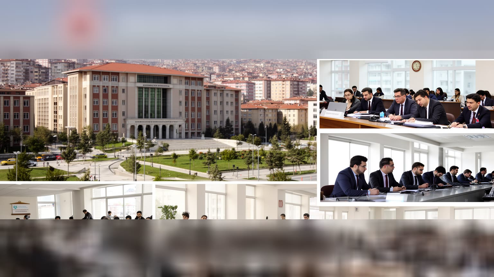
アンカラは官僚都市であると同時に大学都市でもあります。中東工科大学、アンカラ大学、ハジェテペ大学、ビルケント大学などの教育研究機関は、工学、医学、政治学、国際関係、人文社会科学、芸術の人材を全国から集めます。学生、研究者、公務員、外交官、医師、裁判官、技術者が近い距離で暮らすため、街のカフェ、書店、寮、病院、バス停には、首都らしい議論と若い生活が混ざります。公務員採用や国家試験を目指す人、地方から進学してきた学生、政府機関で働く家族は、安定と上昇の期待をアンカラに重ねます。一方で、若年失業、物価上昇、家賃、政治的な表現の自由、大学自治の問題もあります。キャンパスの緑地や学生街は都市に余白を与えますが、郊外化が進むほど通学と通勤は長くなります。官僚制は制度を支える力である一方、住民からは硬さや距離として感じられることもあります。アンカラの知的な厚みは、研究論文や省庁の文書だけでなく、学生食堂、図書館、夜のバス、試験勉強、病院の研修、公共政策をめぐる会話に宿ります。若者が首都で学び、働き、残るかどうかは、都市の未来を左右します。大学と官僚制の近さが、アンカラを単なる行政都市ではなく、国家を考える人材の集積地にしています。卒業後に残る人も多い一方、海外やイスタンブールへ向かう人もいて、人材の循環そのものが都市の競争力になります。
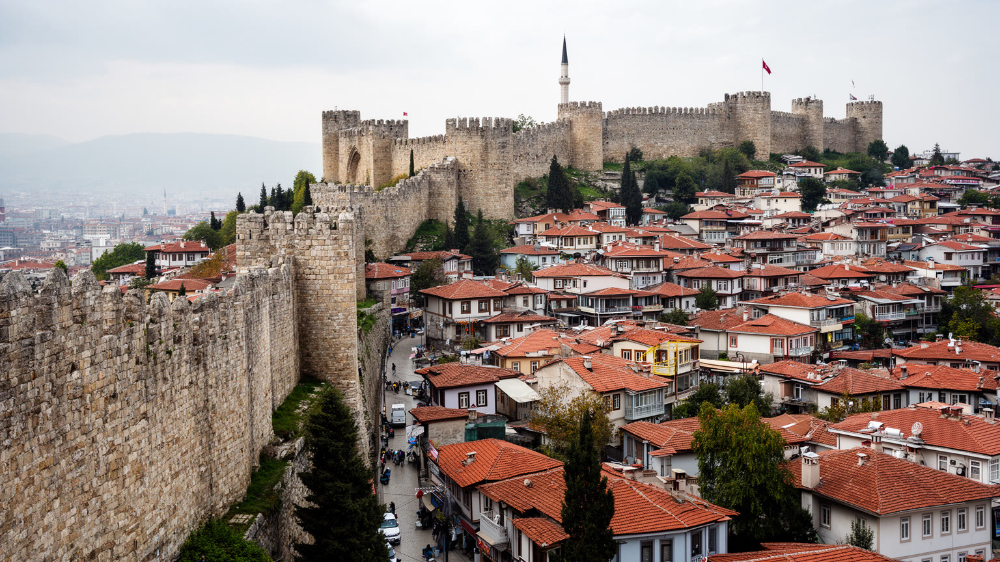
アンカラ城塞とその周辺の旧市街は、共和国期の計画首都とは違う時間を残します。丘の上の城壁、石畳、木造家屋、狭い路地、古いモスク、職人の店、骨董店、市場は、ローマ、ビザンツ、セルジューク、オスマン、近代共和国の層を重ねています。観光客にとっては眺望と写真の場所ですが、住民にとっては商売、修復、家賃、交通、保存規制、日常の買い物が絡む生活空間です。周辺のアナトリア文明博物館は、ヒッタイト、フリュギア、ローマ以前から続く内陸世界の厚みを示し、アンカラを近代国家だけで説明できない都市にします。旧市街の保存は、単に古い家をきれいにすることではありません。建物の安全、住民の収入、観光の混雑、地元の商売、若者が働ける場所を調整する必要があります。再開発が進みすぎると、古い路地は生活の場所から消費の舞台へ変わります。逆に放置すれば、建物は老朽化し、住民の負担は増えます。城塞から近代的な官庁街を眺めると、アンカラが国家によって新しく作られた首都である前に、長い内陸交易と信仰の都市だったことが見えてきます。古い街区を読むことは、首都の公式な顔の下にある地域の記憶を読むことです。坂道の店、茶を飲む人、修復中の家屋、観光客向けの土産物が混在する風景は、保存と生活の緊張を具体的に見せます。歩くほど分かります。
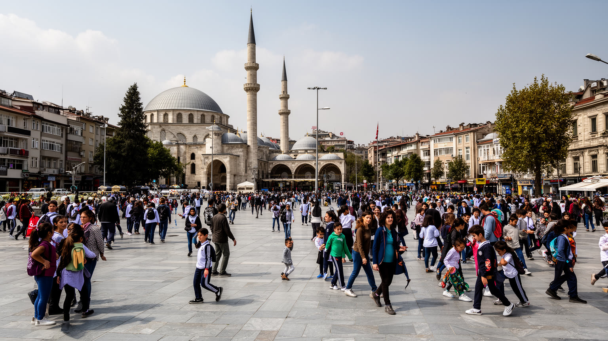
アンカラではイスラムの礼拝、家族の儀礼、ラマダン、葬儀、慈善、近所のモスクが日常に深く根づいています。同時に、共和国の首都として世俗的な国家儀礼、学校教育、法制度、軍や官庁の文化も強く存在します。この二つは単純に対立するだけではなく、同じ家族、同じ通勤者、同じ地域の中で調整されます。大規模なモスクや古い礼拝所は、信仰の場であると同時に、都市のランドマーク、観光、地域の相談場所でもあります。職場の時間、学校行事、服装、飲食、祝日の過ごし方、政治的な発言は、宗教性と世俗性のバランスを日々映します。アンカラはイスタンブールのような多宗教の港町ではありませんが、国内移住、難民、留学生、外交官によって文化的な幅を持ちます。宗教を建物だけで見れば、都市の複雑さは見えません。礼拝後の市場、家族の食卓、大学の議論、官庁の儀礼、女性の働き方、若者の交友関係まで見ることで、信仰が生活の制度として働くことが分かります。世俗共和国の記憶と信仰生活が同じ都市にあるからこそ、アンカラはトルコ社会の緊張を静かに映します。その調整の質は、住民が互いの生活を尊重できるかに表れます。首都の公共空間は、違いを消す場所ではなく、違いを制度と日常で扱う場所です。学校、職場、家族行事で繰り返される小さな調整こそ、都市の共存を支える見えにくい基盤です。
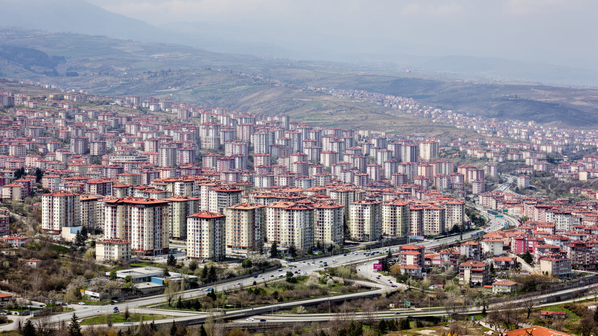
アンカラの暮らしは、官庁街や歴史地区だけではなく、広い住宅団地、郊外の新築マンション、幹線道路沿いの商業施設、地下鉄とバスの結節点によって作られます。首都として人口が増えるにつれ、中心部から西や南西、北東の地区へ住宅地が広がり、通勤距離、家賃、学校、病院、買い物の条件が生活を左右するようになりました。公務員、学生、技術者、医療従事者、建設労働者、商店主、移民が同じ都市に暮らしますが、住む地区によって移動時間と公共サービスへの届きやすさは違います。冬の寒さは暖房費を重くし、夏の乾燥と暑さは緑地や日陰の重要性を高めます。車に頼る郊外では渋滞と燃料費が負担になり、地下鉄沿線では家賃が上がりやすくなります。住宅団地の中庭、近所の市場、学校、診療所、茶店は、派手ではない日常の安全網です。一方で急速な開発は、農地や丘陵地を住宅へ変え、水と交通の負担を増やします。アンカラの生活を読むには、首都の安定した雇用だけでなく、住まいを維持する費用、通勤の疲れ、若者が独立できるか、高齢者が近くで医療に届くかを見る必要があります。都市の豊かさは、中心の大通りよりも、郊外で暮らす人の時間に表れます。子どもの通学路、冬のバス待ち、夜に買い物できる店の距離まで含めて見ると、首都の生活条件はより具体的に見えてきます。
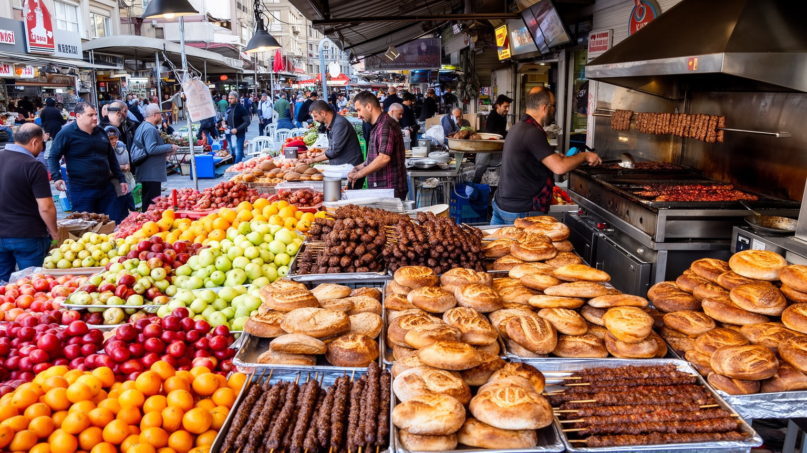
アンカラの食と商いは、首都の硬いイメージをやわらげる入口です。市場では野菜、豆、穀物、チーズ、蜂蜜、乾物、肉、パン、スパイスが並び、周辺の高原農業と都市の食卓を結びます。アンカラ・タヴァやケバブ、ボザ、シミット、家庭料理、学生食堂、官庁街の昼食、郊外モールの飲食店は、住民の時間割を映します。古い市場地区では職人、金物、織物、土産物、食料品の小商いが残り、観光客も住民も同じ通りを使います。食は名物料理だけではなく、物価上昇を最も早く感じる場所でもあります。パンの値段、肉の価格、家族の外食、学生の昼食、冬の暖房費とのバランスは、統計より直接に生活を語ります。地方から来た人が故郷の味を持ち込み、大学生や公務員が安い食堂を使い、外交官や出張者が新しい店を開くことで、アンカラの食は内陸の保守性と首都の多様性を併せ持ちます。市場の声を聞くと、都市の経済は省庁や企業だけでなく、小さな信用、仕入れ、配送、家族労働に支えられていることが分かります。観光で短く訪れる場合も、城塞や博物館だけでなく、昼の食堂や朝の市場を歩くと、首都で働く人の実際の生活が見えてきます。食卓はアンカラの社会を読む身近な地図です。配達する人、厨房で働く人、農村から品物を運ぶ人の時間まで含めて、都市の一皿は広い地域の労働と結びついています。
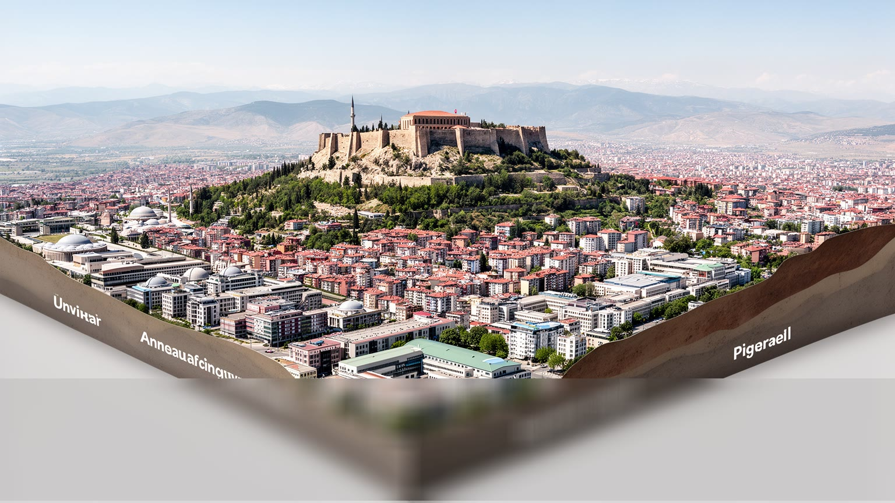
アンカラは、イスタンブールの影に隠れやすい都市ですが、トルコという国家を読むうえでは欠かせない中心です。海峡の商業都市ではなく、アナトリア高原の内陸で共和国の制度を束ねる首都であり、国会、省庁、軍、大学、防衛産業、病院、研究機関、住宅団地が一つの都市圏を作ります。アタテュルク廟は国家の記憶を集め、城塞と旧市街は近代以前の交易と信仰を残し、郊外の団地と幹線道路は人口増加と通勤の現実を示します。アンカラを経済規模だけで見ると、行政と防衛の安定した都市に見えますが、実際には宗教と世俗、国家統合と地域差、専門職と現場労働、若者の希望と物価上昇が交差しています。観光で訪れる人にとっては、アタテュルク廟、博物館、城塞、市場が入口になります。しかし都市を深く読むには、官庁街の警備、大学の学生、郊外のバス、冬の暖房、パンの値段、防衛産業の工場、モスクの礼拝、議会前の政治的な空気まで一緒に見る必要があります。アンカラの重要性は、華やかな景観ではなく、国家を毎日運転する地味で重い機能にあります。内陸首都としての硬さと、住民の日常の柔らかさが重なるところに、この都市の読みごたえがあります。首都の制度と高原の生活を同時に見ると、アンカラは政治の背景ではなく、現代トルコの選択が具体的に現れる都市として立ち上がります。